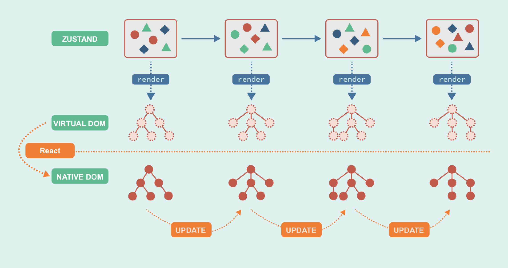
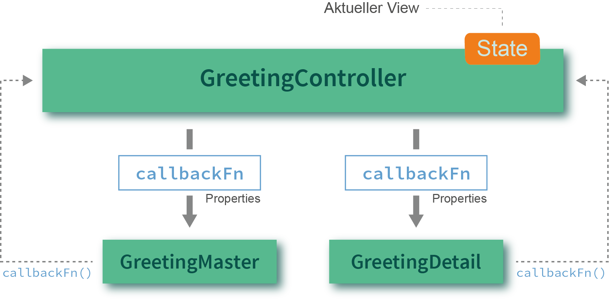
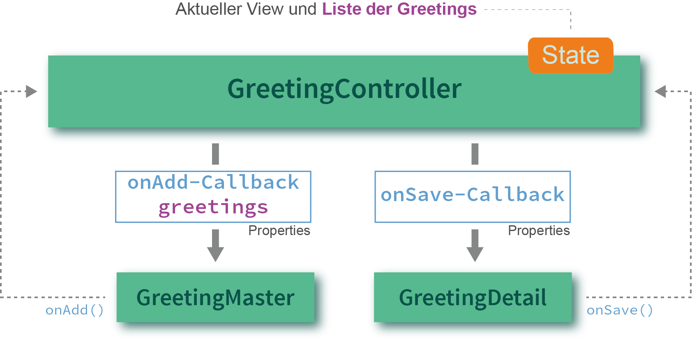
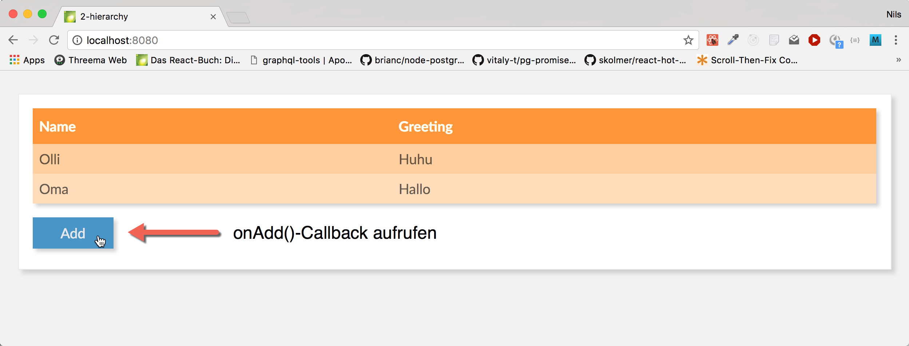
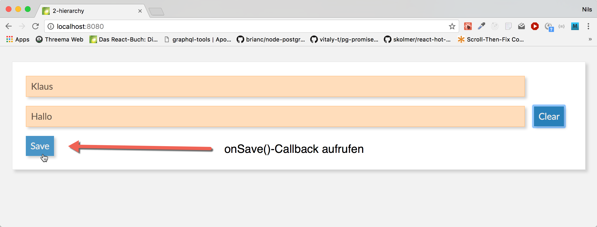
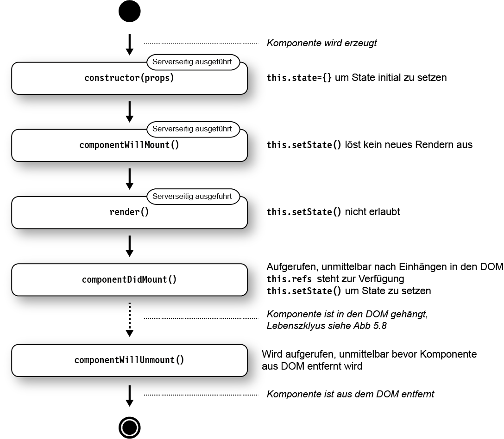
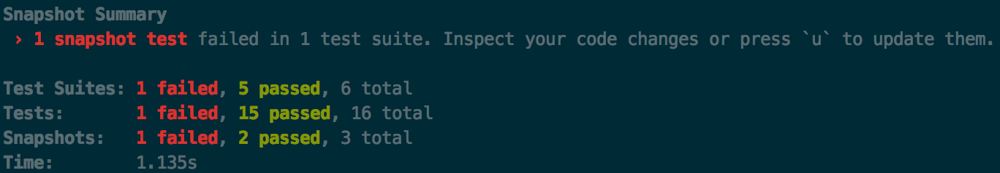
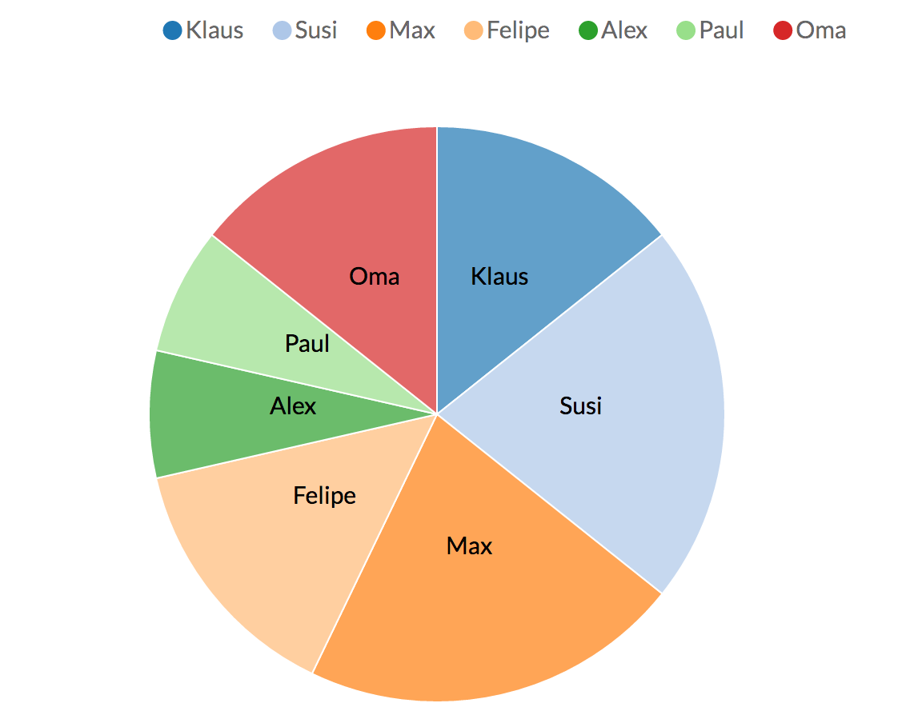

React Workshop - Vorbereitung
-
-
git clone https://github.com/reactbuch/react-workshop.git - oder
git pull
-
- Im geklonten Verzeichnis:
npm install
(Dafür evtl. einen Proxy konfigurieren http://wil.boayue.com/blog/2013/06/14/using-npm-behind-a-proxy/) -
npm run start-backend - In neuem Terminal:
- in
code/workspacewechseln - Ausführen:
npm start
- in
- Browser öffnen: http://localhost:8080
- Wenn dort ein Hello-World-Text erscheint ist alles gut
Folien: Im geklonten Verzeichnis
2018_react-jest.html
oder: https://reactbuch.github.io/react-workshop/2018_react-jest.html
Nils Hartmann / @nilshartmann
Workshop
Einführung in React
Inhalt
- Teil 0: React-Einführung und Build-Prozess
- Teil I: React-Komponenten (Grundlagen)
- Teil II: React-Komponenten: Details, Hierarchien und Anwendungen
- Teil III: Daten lesen und schreiben vom Server
- Teil IV: Testen von React Anwendungen
- (Ausblick: Einbinden von 3rd-Party-Libs)
Jederzeit: Fragen und Diskussionen!
Beispiel-Anwendung

Teil 0
React-Einführung und Build-Prozess
React
- Framework von und für Facebook
- Eingesetzt u.a. von Microsoft, Paypal, Spotify uvm
- Minimales API
- Minimales Feature Set
- Ihr könnt/müsst viele Entscheidungen selber treffen
- Bewusste Verstöße gegen Best-Practices
- Zentrales Konzept: Komponenten
Komponenten in React

Komponenten in React
Unser Beispiel in Komponenten

React Komponenten
- bestehen aus Logik und UI
- keine Templatesprache
- werden deklarativ beschrieben
- werden immer komplett gerendert (kein 2-Wege-Data-Binding)
- werden zu ganzen Anwendungen aggregiert
React Komponenten
- Werden als ES6 Klasse (oder Funktion) implementiert
- Keine Templatesprache (stattdessen JavaScript)
- Templates können HTML-artige Syntax enthalten (JSX)
Eine erste Komponente: Hello, World!
- Beispiel Schritt-für-Schritt (
code/workspace-live-coding)
Hello World React
import React from "react";
export default class HelloMessage extends React.Component {
constructor(props) {
super(props);
this.state = {greeting: props.initialGreeting};
}
render() {
return (
<div>
<input
value={this.state.greeting}
onChange=
{event => this.setState({greeting: event.target.value})}
/>
<p>{this.state.greeting}, World</p>
</div>
);
}
}Aufruf
index.html
<html>
<body>
</body>
<script src="dist/main.js"></script>
</html>
main.js
import React from 'react';
import ReactDOM from 'react-dom';
import HelloMessage from './HelloMessage';
const mountNode = document.getElementById('mount');
ReactDOM.render(<HelloMessage initialGreeting="Hello"/>, mountNode);
Hintergrund
ES6 Features
ES6: Klassen
class Person {
constructor(name) {
this._name = name;
}
getName() {
return this._name;
}
}
class Programmer extends Person {
constructor(name, language) {
super(name);
this.language = language;
}
code() {
return `${this.getName()} codes in ${this.language}`;
}
}const programmer = new Programmer('Erna', 'JavaScript');
console.log(programmer.code());
console.log(programmer instanceof Programmer); // true
console.log(programmer instanceof Person); // trueES6: Module, Importe und Exporte
ES6: Export einer einzigen Klasse
// Person.js
class Person {
// ...
}
export default Person;
// Person.js
// in einer Zeile zusammengefasst
export default class Person {
// ...
}
ES6: Import
// Programmer.js
import Person from './Person';
export default class Programmer extends Person {
// ...
}
ES6: Benannte Exporte
// util.js
export function displayInPage(text) {
document.body.innerHTML +=
`${text}
` ;
}
export showInfo = msg => window.alert(`Wichtige Info: ${msg}`);
// or
function displayInPage(text) { . . . }
const showInfo = ...;
// specify exports
export { displayInPage, showInfo };
import {displayInPage} from "./util";
displayInPage('Hello, World');
ES6: Arrow Functions
const displayInPage = (text) => {
return document.body.innerHTML +=
`${text}
`;
};// Klammern können weggelassen werden, genau ein Parameter
// ebenso die geschweiften Klassen, wenn nur ein Statement:
const displayInPage = text => document.body.innerHTML += `${text}
`;
ES6: Template Strings
Template Strings werden in Backticks (``) geschrieben und können Ausdrücke (in
${}) enthalten:
const name = "Susi";
const greeting = `Hello, ${name}`; // Hello, Susi
const four = `Two and two is: ${2+2}` // Two and two is: 4
const time = `The time is: ${new Date()}`); // The time is: ...
Hintergrund
Buildprozess
Buildprozess
- ES6ff- und JSX-Code muss nach ECMAScript 5 übersetzt werden
- Status der ES6 Implementierungen der Browser: https://kangax.github.io/compat-table/es6/
- Typische Werkzeuge
- Babel oder TypeScript (Compiler)
- Webpack (Bundler)
- Webpack Dev Sever (HTTP Server mit Hot Reload)
Webpack und Babel

Webpack Development Server
- Zum Ausführen der Anwendung wird ein Webserver benötigt
- Für die Entwicklung
Webpack Dev Server:
- ...führt Webpack auf Basis der Projekt Webpack Konfiguration aus
- ...erzeugt Ausgabe in Memory (Performance)
- ...Hot Reloading: Automatische Aktualisierung nach Code Änderung
- ...React Hot Loader: Zustand bleibt nach Aktualisierung erhalten (Beta)
create-react-app
User GuideBootstrap von React Anwendung
Fertige Konfiguration von Webpack, React, ...
Der yarn Package Manager
https://yarnpkg.comAlternative zu NPM
Verwendet ebenfalls package.json
Etwas anderes Kommandozeileninterface:
# Installiert alle Pakete aus der package.json
yarn
# oder:
yarn install
# Neues Paket installieren oder aktualiseren
yarn add [--dev] package
# Script aus package.json Ausführen
yarn SCRIPT_NAME
Das Beispiel-Project
Workspace
-
2018_react-jest.htmlSlides im Root-Verzeichnis -
code/workspace: Verzeichnis für Eure Übungen -
code/schritte: Fertige Stände nach den einzelnen Teilen -
code/material: Code als Ausgangspunkt für Übungen
Starten
- Im
Root-Verzeichnis (falls noch nicht geschehen):
npm run start-backend, um den REST-Server zustarten (einmal starten, dann einfach durchlaufen lassen) - In
code/workspace:
npm start, um Webpack DevServer zu starten. Kann durchlaufen, falls Reload nicht klappt, neu starten
Übung 0: React Hello-World
Mach dich mit den Werkzeugen vertraut und schreib deine erste React-Komponente
Schritt #1: Tool-Chain starten (falls noch nicht gemacht)
Nutze für die Übungen das
workspace-Verzeichnis in diesem Repository. Hier ist eine Tool-Chain mit Webpack und Babel
vorbereitet
-
npm install(auf oberster Ebene)
(Dafür evtl. einen Proxy konfigurieren http://wil.boayue.com/blog/2013/06/14/using-npm-behind-a-proxy/) -
cd code/workspace -
npm start - Öffne http://localhost:8080 im Browser
- Wenn auf der Seite 'Hello, World' steht, ist alles gut
Schritt #2: Deine erste React-Komponente
- Ersetze die "statische" Komponente (HelloMessage) mit der React-Komponente aus dem vorherigen Beispiel aus den Folien
-
Zusatzaufgabe: Experimentiere mit der Anwendung, mache einige Änderungen, wie z.B.
- Alle Eingaben sollen in Großbuchstaben auftauchen
- Gib irgendeine Rückmeldung wenn die Eingabe leer ist
Teil I
React-Komponenten (Grundlagen)
Ziel-AnwendungDokumentation
Themen
- Rendering
- Properties und Zustand
- Referenzen auf DOM-Elemente (Refs)
React: Rendering
Jede React-Komponente braucht eine
render-Methode:
- wird aufgerufen beim ersten Rendering und wenn sich der Zustand ändert
- kann HTML-artige JSX-Syntax nutzen
- liefert genau ein Element oder null oder ein Boolean oder ein Array oder ein Fragment oder einen String zurück
class GreetingDetail extends React.Component {
render() {
return (
<input onChange={event => this.updateModel(event.target.value)}
value={this.state.greeting} />
{this.state.greeting}, World
);
}
// ...
}
React: JSX
- Wird wie HTML hingeschrieben, inkl Attribute:
<div><input type="text"/></div> - Attribute, die keine Strings sind, müssen in {} eingeschlossen
werden:
<Counter label="Count" count={7} showValues={true} /> - Kann pures JavaScript enthalten, eingeschlossen in {}:
const title = 'Hello, World'; <h1>{title.toUpperCase()}</h1> -
class-Attribut heißtclassName:<h1 className="title">...</h1> - CSS-Eigenschaften werden als Objekt übergeben in
Camel-Case-Notation:
const styles = { marginLeft: '10px', border: '1px solid red' }; <h1 style={styles}>...</h1>
React: JSX #2
- Zuweisen an Variablen
const counter = <Counter label="..." /> - ...als Return-Wert:
function renderCounter(label) { return <Counter label="..." />; } - Fragmente (rendern selber kein Element in den DOM, nur ihre
Kind-Elemente):
render() { return <React.Fragment> <li>Yes</li> <li>No</li> </React.Fragment> } - null, false oder boolean, um nichts zu rendern:
render() { if (!someCondition) { return null; // oder false oder true } return ...; }
ES6: Erweiterte Objekt-Literale
// ES5:
const firstName = 'Klaus';
const person = {
firstName: firstName
};
console.log(person.firstName); // Klaus
// ES6:
const firstName = 'Klaus';
const person = {
firstName
};
console.log(person.firstName); // Klaus
ES6: Destructuring von Objekten
const person = {
fistName: 'Klaus',
lastName: 'Mueller',
age: 42
};const {firstName, age, notThere} = person;
console.log(firstName); // Klaus
console.log(age); // 42
console.log(notThere); // undefined
function someFunction({firstName, age, notThere}) {
console.log(firstName); // Klaus
console.log(age); // 42
console.log(notThere); // undefined
}
someFunction(person);
React: Properties und Zustand
- Properties werden der Komponente von außen übergeben (und nicht verändert)
- Zustand (State) ist eine innere Eigenschaft der Komponente (die verändert werden kann)
- Beides sind Objekte mit Key-Value-Paaren
Properties einer Komponente
- Properties werden über den Konstruktor in die Komponente hineingereicht
- Properties dürfen nicht verändert werden
- Zugriff über
this.props -
this.props.childrenenthält Kind-Elemente
class NavBar extends React.Component {
// (hier Constructor optional)
constructor(props) {
super(props);
}
render() {
return (
<div className="NavBar">
{this.props.title}
{this.props.children}
</div>
);
}
}
<NavBar title="Navigation"><a href=""> ... </a></NavBar>
Zustand einer Komponente
- Beispiel: Inhalt eines Eingabefelds, Daten vom Server
- Werte üblicherweise immutable
-
Initialisieren im Konstruktor mit
this.state={} - Zustand
lesen über
this.state - Zustand
setzen über
this.setState()- Achtung: kein "reiner" Setter
- Führt alten und neuen Zustand zusammen
- Wird asynchron ausgeführt!
- Löst erneutes rendern der gesamten Komponente aus
- Eines der zentralen Konzepte von React
Beispiel: Zustand einer Komponente
class GreetingDetail extends React.Component {
constructor(props) {
super(props);
this.state = { name: 'Klaus' };
}
updateModel(event) {
// Zustand ändern: Komponente wird neu gerendert
this.setState({name: event.target.value});
}
render() {
return <input value={this.state.name}
onChange={e => this.updateModel(e)} />
}
// ...
}
React: Events und Data Binding
Es gibt keine automatische Bindung an Modelle (2-Wege Databinding)
- DOM-Events werden in React-Events verpackt
- React-Events haben weitgehend selbe API wie DOM-Events
- Besonderes Event:
onChange
- onChange ist auf
input,textarea,selectdefiniert und verhält sich Komponenten- und Browser-übergreifend einheitlich
- onChange ist auf
class GreetingDetail extends React.Component {
render() {
return (
<input onChange={event => . . .} />
);
}
// ...
}
Render Zyklus

Virtual DOM
"Rendern" hat doppelte Bedeutung!
React: Referenzen auf nativen DOM
- Elementen kann eine Callback-Funktion
refsübergeben werden - Funktion wird nach dem Rendern mit Referenz auf DOM Element aufgerufen (oder
null) - Diese Referenz kann man z.B. als Member-Variable speichern
class HelloMessage extends React.Component {
render() {
return (
<input ref={inputElement => this.inputElement = inputElement}
onChange={...} value={...}
/>
<button
onClick={() => this.reset()}>
Clear
</button>
);
}
reset() {
this.setState({greeting: ""});
// focus() ist Funktion auf nativem DOM Element
this.inputElement.focus();
}
}
Properties, State und Instanz-Variablen
- Properties: Konfiguration von außen übergeben. Unveränderlich innerhalb der Komponente
- State: : Interner und veränderlicher Zustand der Komponente. State-Änderung führt zu re-rendering
- Instanz-Variablen: Nicht render-relevante Informationen, zB Refernzen auf DOM-Elemente, Callbacks zum Beenden von Timern
Übung 1: Detail-Ansicht für unsere Gruß-Anwendung
Erzeuge eine Komponente mit der man einen Namen und eine Grußformel eingeben kann
Schritte
Erweitere deine erste React-Komponente im workspace-Ordner
- benenne deine Komponente in
GreetingDetailum - du brauchst zwei Eingabefelder, die
nameundgreetingim Zustand der Komponente setzen - Erweitere deine Komponente so, dass man von außen Properties übergeben kann, die den Zustand initialisieren
- Optionaler Schritt: Kannst du die Komponente so bauen, dass du mit einer einzigen update-Methode beide Felder im Zustand updaten kannst?
Teil II
React-Komponenten: Details, Hierarchien und Anwendungen
Ziel-AnwendungThemen
- Komponenten als Funktionen
- PropTypes
- Darstellung von Listen
- Architektur-Idee: Controller-Komponente und View-Komponente
- Durchreichen von Zustand und Callbacks
Komponenten als Funktion
- Alternative zu Klassen
- Komponente ist eine einfache Funktion
- entspricht der
render-Methode einerReact.Component - Properties werden per Parameter übergeben (als Objekt)
- Zurzeit nur ohne Zustand und ohne Lifecycle-Methoden
import React from 'react';
export default function Greet(props) {
return (
{props.greeting}
{props.name}
);
}
// Verwendung:
<Greet name="Susi" greeting="Hello" />
Komponenten als Funktion
// Mit Destructuring
export default function Greet({greeting, name}) {
return (
<div>
<h1>{greeting}</h1>
<h2>{name}</h2>
</div>
);
}
// Als Arrow Function
const Greet = ({greeting, name}) => (
<div>
<h1>{greeting}</h1>
<h2>{name}</h2>
</div>
);
export default Greet;
PropTypes
- Eine Komponente kann deklarieren, welche Properties sie erwartet
- Auch der Typ kann angegeben werden ( Mögliche Typen)
- Fehlende / falsche Properties führen zu Laufzeitfehlern
- Ab React 15.5 eigenes npm modul:
prop-types - Alternative: Typsystem ( Flow oder TypeScript)
import PropTypes from 'prop-types';
class GreetingDetail extends React.Component { . . . };
GreetingDetail.propTypes = {
greeting: PropTypes.shape({
name: PropTypes.string.isRequired,
greeting: PropTypes.string.isRequired
}),
onAdd: PropTypes.func.isRequired
};
PropTypes
Mit statischen Properties (
static noch kein JS Standard!)
import PropTypes from 'prop-types';
class GreetingDetail extends React.Component {
static propTypes = {
greeting: PropTypes.shape({
name: PropTypes.string.isRequired,
greeting: PropTypes.string.isRequired
}),
onAdd: PropTypes.func.isRequired
};
render() { . . . }
};
PropTypes
Für Komponenten als Funktionen
import PropTypes from 'prop-types';
function HelloMessage(text) { . . . }
HelloMessage.propTypes = {
text: PropTypes.string.isRequired
}
Listen
JSX bietet nichts für Listen
Ausgabe typischerweise über
Array.map()
Elemente einer Liste brauchen einen eindeutigen Key
const greetings = [
{ id: 0, name: 'Olli', greeting: 'Huhu' },
{ id: 1, name: 'Oma', greeting: 'Hallo' }
];
const MyTable(props) => (
<table>
{props.greetings.map(greeting =>
<tr key={greeting.id}>
<td>{greeting.name}</td>
<td>{greeting.greeting}</td>
</tr>
)}
</table>
);
Listen und Keys
- Ab React 16 können Arrays in
renderzurückgegeben werden (anstatt eines Root Elements) - Elemente brauchen trotzdem einen eindeutigen Key
// Beispiel: statische Elemente
const Choices = () => {
return [
<td key="yes">Yes</td>,
<td key="no">No</td>
]
};
// Beispiel: dynamisches Array
const GreetingRows = ({greetings}) => {
// map liefert ein Array zurück!
return greetings.map(greeting =>
<tr key={greeting.id}>
<td>{greeting.name}</td>
<td>{greeting.greeting}</td>
</tr>
;
)
Fragmente
- Eine React-Komponente liefert immer genau ein (Top-Level)-Element zurück
- Alternative 1: Arrays (wie gesehen)
- Alternative 2: Fragments
- Ein Fragment ist ein Top-Level-Element, für das kein DOM-Element erzeugt wird (ab React 16.2)
// geht nicht:
const Choices = () => (
<td key="yes">Yes</td>
<td key="no">No</td>
);
// geht:
const Choices = () => (
<React.Fragment>
<td key="yes">Yes</td>
<td key="no">No</td>
</React.Fragment>
);
// alternativ:
const Choices = () => (
<>
<td key="yes">Yes</td>
<td key="no">No</td>
</>
);
Anwendungen und Komponentenhierarchien
Problem: Kommunikation zwischen Komponenten
#1: Welche Komponente soll angezeigt werden (Master oder Detail?)

Problem: Kommunikation zwischen Komponenten
#2: Wo wird der State (Greetings) verwaltet?

Problem #1
Welche Komponente soll angezeigt werden?
Master oder Detail?
Controller Komponente #1
Verwaltet den Zustand (u.a. welche Komponente sichtbar ist)

Controller Komponente #2
Rendering der Children
class GreetingController extends React.Component {
constructor() {
this.state = { mode: 'MASTER' }
}
render() {
if (this.state.mode === 'MASTER') {
return <GreetingMaster />;
}
return <GreetingDetail />;
}
}
Controller Komponente
Wie wird zwischen den Komponenten kommuniziert?
Beispiel: Child-Komponente will Parent Informationen übermitteln
Callback-Funktionen als Properties #1
Controller Komponente
Kommunikation mit Children: Callback-Funktionen als Properties #2
class GreetingController extends React.Component {
constructor() { . . . }
render() {
if (this.state.mode === 'MASTER') {
return <GreetingMaster
onAdd={() => this.setState({mode: 'DETAIL'}) } />;
}
return <GreetingDetail
onSave={() => this.setState({mode: 'MASTER'}) } />;
}
}
class GreetingMaster extends React.Component {
render() {
return (
...
<button onClick={this.props.onAdd}>Add</button>
)
}
}
Problem #2
Wo wird der State (Greetings) verwaltet?
Wie kommen neue Greetings (GreetingDetail) in die Liste (GreetingMaster)?
Controller Komponente
Verwaltet den "globalen" State
State wird als Property an Children übergeben
Controller Komponente
State wird als Property an Children übergeben #2
class GreetingController extends React.Component {
constructor() {
this.state = {
mode: 'MASTER',
greetings: . . .
}
}
render() {
if (this.state.mode === 'MASTER') {
return <GreetingMaster
greetings={this.state.greetings}
onAdd={() => this.setState({mode: 'DETAIL'}) }
/>;
}
. . .
}
}
class GreetingMaster extends React.Component {
render() {
const greetings = this.props.greetings;
return (
<table>
{ greetings.map(g => <tr>...</tr>) }
</table>
<button onClick={this.props.onAdd}>Add</button>
)
}
}
Controller Komponente
Verwaltet den "globalen" State
Controller Komponente
Neues Greeting wird per Callback-Funktion übergeben #2
class GreetingController extends React.Component {
constructor() { . . . }
render() {
if (this.state.mode === 'MASTER') {
. . .
}
return <GreetingDetail
onSave={(newGreeting) => this.setState({
greetings: [...this.state.greetings, newGreeting],
mode: 'MASTER'})
}
/>;
}
}
class GreetingDetail extends React.Component {
render() {
return (
<input name="name" . . . />
<input name="greeting" . . . />
<button onClick={() => this.props.onSave({
name: this.state.name,
greeting: this.state.greeting
})
}>Add</button>
)
}
}
Komponenten in Hierarchien
Beispiel: Unsere Anwendung (Zusammenfassung)

Smart und Dumb Components
(Alternativ: Container und Presentation Components)

Übung 2: Eine komplette Anwendung zusammen setzen
Füge deinen bestehenden Detail-View (
GreetingDetail) und einen Master-View über eine Controller-Komponente zusammen
Schritte
- kopiere das Material aus
code/material/2-hierarchyin deinen src-Ordner - erweitere im
GreetingControllerdie render-Methode, so dass deinGreetingDetailangezeigt wird, wenn der Benutzer den Add-Button klickt:- dort gibt es bereits einen Kommentar, der dir die richtige Stelle anzeigt und weitere Details enthält
- übergib einen Callback der
addGreetingnutzt
- im deinem
GreetingDetailbrauchst du einen neuen Knopf, der mit dem neuen Gruß den Callback aufruft
(Du kannst deinGreetingDetailverwenden, oder die Vorlage code/material/2-hierarchy/src/_GreetingDetail.js verwenden)
GreetingMaster
GreetingDetail
Portals
Erlauben, außerhalb des "Root-React-Elements" zu rendern (zB für modale Dialoge)
class GreetingController extends React.Component {
render() {
return
React.createPortal(
<ModalDialog title="...">...</ModalDialog>,
document.getElementById("portalRoot")
);
}
}
// index.html
<html>
<body>
<div id="portalRoot"</div>
<div id="mount"></div>
</body>
<script src="dist/main.js"></script>
</html>
Error Boundaries
Fehler während des Renders abfangen (statt try/catch)
class GreetingController extends React.Component {
componentDidCatch(error, info) {
this.setState({hasError: true});
}
render() {
if (this.state.hasError) {
return <ErrorDialog
onClick={() => this.setState({hasError: false})}>Fehler!/<ErrorDialog>
}
return <GreetingMaster />
}
}
Fängt nur Fehler der Unterkomponenten, nicht Fehler der eigenen render-Methode!
Teil III
Daten lesen und schreiben vom Server
Ziel-AnwendungHerausforderungen
- Wie machen wir das Laden und Speichern technisch?
- Wo steht der Code zum initialen Laden der Grüße? (beim Start der Anwendung)
- Wo speichern wir?
- Wie funktioniert asynchrone Verarbeitung in React?
Server-Calls
- React macht keine Angabe, wie Server-Calls (technisch) gemacht werden
- Häufig in React verwendet:
fetch API
- Browser-API zum Ausführen von HTTP Requests
- hohe Verbreitung
- Spezifikation: https://fetch.spec.whatwg.org/
- Polyfill: https://github.com/github/fetch
Beispiel: fetch
Daten lesen per GET
// Für GET Zugriff reicht es, die URL anzugeben:
fetch('http://localhost:7000/api/greetings')
.then(response => response.json())
.then(json => /* ... */)
.catch(ex => console.error('request failed', ex));
Beispiel #2: fetch
Daten lesen per POST
fetch erwartet als zweiten Parameter ein Objekt mit Konfigurationsparametern, u.a:
-
method: gibt die HTTP Methode an (PUT,POST,DELETE, ...) -
headers: Objekt mit HTTP Headern für den Request -
body: Der Request-Payload (als String)
fetch(url, {
method: 'POST',
headers: {
'Accept': 'application/json',
'Content-Type': 'application/json'
},
body: JSON.stringify(payload)
})
.then(...)
ES6: Promises
Ein Promise ist ein Versprechen auf einen Wert
Wird evtl. erst in der Zukunft eingelöst
Verkettete Ausführung
const promise = . . .;
// then returns a new promise
const promise2 = promise.then(value => `${value} plus stuff`);promise2.then(value => console.log(value));
// Output after 1 second: Result from promise plus stuff
Fehler führen zum Abbruch der Chain
Allerdings muss man etwas tun, um das mitzubekommen: catch()
Catch-Klausel im Erfolgsfall
Promise
// creates and directly resolves promise
.resolve('Result from promise')
.then(x => {
// this will be printed
console.log(x);
})
.then(() => {
console.log('This will be printed');
})
// this will NOT be printed as no error occured
.catch(e => console.log('error: ', e))
// Output:
// Result from promise
// This will be printedCatch-Klausel im Fehlerfall
Promise
// creates and directly resolves promise
.resolve('Result from promise')
.then(x => {
// this will be printed
console.log(x);
throw new Error('Something went wrong');
})
.then(() => {
console.log('This will NOT be printed');
})
// this will be printed
.catch(e => console.log('error: ', e))
// Output:
// Result from promise
// error: [Error: Something went wrong]fetch im Detail
// 1. fetch returns a promise, that will be resolved
// with a Response object when response is received
// from server
fetch('http://localhost:7000/api/greetings')
// 2. the Response object contains a json() function,
// that returns the parsed JSON from the Response body
.then(response => response.json())
// 3. with the resolved JSON object we set the
// component state (=> leads to re-rendering)
.then(json => this.setState({greetings: json})
// 4. in case something goes wrong (during request,
// request processing or rendering)
.catch(ex => console.error('request failed', ex));
// as an alternative we could set and render an error msg:
// .catch(ex => this.setState({error: ex})
fetch mit async/await
async function loadGreetings() {
try {
const response = await fetch('http://localhost:7000/api/greetings');
const json = await response.json();
this.setState({greetings: json});
} catch (err) {
console.error("Loading failed: ", ex);
// Alternative (set error message as state):
// this.setState({error: err})
}
}
- Empfehlung: async/await statt Promise-Ansatz verwenden
- Insbesondere bei komplexen Abläufen oder mehreren fetch-Aufrufen viel einfacher
Alternative zu Promises
async / await
Erlauben es, asynchronen Code "linear" hinzuschreiben
- Seit ECMASCript 2017 Standard
- Babel und TypeScript können nach ES5 compilieren
- Promise Polyfill für ältere Browser verwenden
async / await
-
ayncdefiniert "async functions" -
ayncfunctions liefern immer ein Promise zurück:async function greet(name) { return `Hello, ${name}`; } const greeting = greet('Klaus'); // greeting ist ein Promise! console.log(greeting instanceof Promise); // => true console.log(greeting) // => Promise {<resolved>: "Hello, Klaus"} -
ayncfunction als Fat Arrow function:const greet = async (name) => `Hello, ${name}`; const greeting = greet('Klaus'); // greeting ist ein Promise! console.log(greeting instanceof Promise); // => true console.log(greeting) // => Promise {<resolved>: "Hello, Klaus"} -
Nur in
async functions kann
awaitverwendet werden!
async / await
await wartet auf erfüllte Promises
async function greet(name) {
return `Hello, ${name}`;
}
// oder:
function greet(name) { return new Promise(...); }
async function sayWhat(name) {
const greeting = await greet(name);
// ...Achtung! Hier zwischen kann Zeit vergehen...
// greeting ist ein String!
console.log(greeting); // => Hello, ...
}
async / await
Statt
then bzw
catch werden mehrere
await Statements bzw Exception Handling verwendet:
// Liefert ein Promise zurück
async function loadUser(username) { . . . };
async function loadProfileDate(userId) { . . .};
async function loadData() {
try {
const user = loadUser('klaus');
const profile = loadProfileData(user.userId);
} catch (e) {
console.error("Something failed")
}
}
async / await
Auf mehrere Promises parallel warten
// Liefert ein Promise zurück
async function loadUser(userId) { . . . };
async function loadProfileDate(userId) { . . .};
async function loadData(userId) {
try {
const userAndProfileData = await Promise.all([
loadUser(userId),
loadProfileData(userId)
]);
// userAndProfileData[0] === user
// userAndProfileData[1] === profileData
} catch (e) {
// wenn mind einer Aufrufe schief geht
console.error("Something failed")
}
}
async / await
Auf mehrere Promises parallel warten #2
Mit Array Destructuring
// Liefert ein Promise zurück
async function loadUser(userId) { . . . };
async function loadProfileDate(userId) { . . .};
async function loadData(userId) {
try {
const [user, profileData] = await Promise.all([
loadUser(userId),
loadProfileData(userId)
]);
. . .
} catch (e) {
// wenn mind einer Aufrufe schief geht
console.error("Something failed")
}
}
Wann werden Daten gelesen und geschrieben?
Initiales Laden von Daten
Komponenten können optionale Lifecycle-Methoden haben
(c) "React: Die praktische Einführung in React, React Router und Redux", dpunkt 2016
Initiales Laden von Daten
componentDidMount wird aufgerufen, wenn Komponente ins DOM gerendert wurde
Hier werden Daten üblicherweise initial geladen:
class GreetingController extends React.Component {
constructor(props) {
// intial state (empty now)
this.state = { greetings: [] };
}
// 'async' wegen 'await' notwendig (sonst ohne 'async' hinschreiben)
async componentDidMount() {
try {
const response = await fetch('/api/greetings');
const json = await response.json();
this.setState({ greetings: json});
} catch (error) { . . .}
}
}
Empfehlung: Zugriffe auf Server in externes Modul auslagern (besser test- bzw mockbar)
Speichern von Daten
Zum Beispiel als Folge einer Benutzerinteraktion:
class GreetingController extends React.Component {
render() {
...
<GreetingDetail onSave={greeting => this.saveGreeting(greeting)} />
...
}
async saveGreeting(greetingToBeSaved) {
try {
const response = await fetch('/api/greetings', {
method: 'POST',
headers: ...,
body: JSON.stringify(greetingToBeSaved)
});
const newGreeting = response.json();
// Neuen Gruss an bestehende Liste anfuegen und State neu setzen
const newGreetings = [ ...this.state.greetings, newGreeting ];
this.setState({greetings: newGreetings});
} catch (err) { . . . }
}
}
Übung: Laden und Speichern der Daten von/auf einem Server
Entwickle auf Basis von fetch eine Version des GreetingControllers, der die Daten auf dem Server laden und dort wieder speichern kann
Der Server ist bereits vorgegeben und kann mit
npm run start-backend im Root-Verzeichnis gestartet werden. Er ist dann unter Port 7000
erreichbar
Schritte
- Kopiere
code/material/3-remote/GreetingController.jsin deinen Arbeitsbereich - Die Serverzugriffe sollen in
loadGreetingsundsaveGreetingerfolgen - Dort sind bereits entsprechende TODOs für dich eingetragen
Teil IV
Testen von React Anwendungen
Was testen wir überhaupt?
- UI-unabhängige Logik (z.B. Services, Backend-Calls)
- Rendern (wird meine Greeting-Liste für ein Satz von Greetings korrekt dargestellt)
- Interaktionen (funktionieren meine Event-Listener korrekt)
- Verhalten im Browser (z.B. korrekte Darstellung, Browser-spezifisches JavaScript, Arbeiten mit history, Titelzeile, Scrollbars etc)
Was testen wir überhaupt?
- UI-unabhängige Logik
- Rendern (wird meine Greeting-Liste für ein Satz von Greetings korrekt dargestellt)
- Interaktionen (funktionieren meine Event-Listener korrekt)
- Verhalten im Browser (z.B. korrekte Darstellung, Browser-spezifisches JavaScript, Arbeiten mit history, Titelzeile, Scrollbars etc)
Anforderungen
- Komponenten müssen im Test gerendert werden können
- Gerenderte Komponenten/HTML-Elemente müssen gefunden und validiert werden
- Zustand und Properties der Komponenten müssen veränderbar sein
- Events müssen getriggert oder simuliert werden können
- Interaktion mit DOM muss evtl möglich sein
Jest
"Painless JavaScript Testing" ( http://facebook.github.io/jest/)
Vollständige Test-Lösung, wird von Facebook für Testen von React verwendet:
- Test Runner
- Specs, Assertions, Mocks
- Code Coverage
- Snapshot testing
Beispiel: Ein einfacher Test
// sum.js
export const sum = (a,b) => a+b;
// sum.test.js
import {sum} from '../sum.js';
test('sum of 2 and 2 is 4', () => {
expect(sum(2, 2)).toBe(4);
});
test('sum of 2 and 2 is not 3', () => {
expect(sum(2, 2)).not.toBe(3);
});
Testcases
test oder
it
test('it should work', () => {
expect(...).toBe(...);
});it('it should also work', () => {
expect(...).toBe(...);
});Testsuites
- Testsuites (optional, müssen nicht verwendet werden)
describe('some feature', () => { test(() => {...}); test(() => {...}); test(() => {...}); }); - Überspringen (
skip) / Auswählen (only) einzelner Tests:describe.only('some feature', () => { } ); describe.skip('another feature', () => { }); test.only('should work', () => { }); test.skip('does not work, skip for now', () => { });
Expectations und Matcher
expect() liefert eine Expectation zurück, auf der Matcher definiert sind:
expect(actual).toXyz(expected);
// for example:
expect("Hello Jest").toBe("Hello Jest"); // => ok
Einige Matcher
// Vergleich auf Identität
expect(actual).toBe(expected);
// Inhaltsvergleich:
expect(actual).toEqual(expected);
// true / false / null:
expect(actual).toBeTruthy();
expect(actual).toBeFalsy();
expect(actual).toBeNull();
// Länge (Array oder String)
expect(actual).toHaveLength(123);
React Test Renderer
https://www.npmjs.com/package/react-test-renderer
Rendert React Komponenten in JSON Objekte (ohne DOM):
import renderer from 'react-test-renderer';
const component = renderer.create(
<GreetingMaster greetings={someGreetings} />
);
console.log(component.toJSON());
{ type: 'div',
props: {},
children: [
{ type: 'table', props: {}, children: [Object] },
{ type: 'button', props: [Object], children: [Object] }
]
}
"Snapshot Testing" mit Jest
expect(obj).toMatchSnapshot() vergleicht ein JSON-Objekt mit einer gespeicherten Datei:
- Bei
erster Ausführung: legt Snapshot-File an (
Beispiel)
- Snapshotdateien werden in Git versioniert
- Bei folgenden Ausführungen: erzeugt neuen Snapshot und vergleicht mit gespeichtertem Snapshot
- Wenn Snapshots unterschiedlich
- Fehler samt Diff ( Beispiel)
- Im Watch Mode kann Snapshot aktualisiert werden 
Snapshot Testing mit Jest und React
import renderer from 'react-test-renderer';
test('it should render correctly', () => {
const someGreetings = [ . . . ];
const component = renderer.create(
<GreetingMaster greetings={someGreetings} />
);
expect(component.toJSON()).toMatchSnapshot();
});
Snapshot sagt nicht, ob UI richtig oder falsch gerendert wird, sondern nur, ob sie verändert wurde!
Enzyme
JavaScript Testing utilities for React ( http://airbnb.io/enzyme/)
Bibliothek mit Funktionen zum Testen von React Komponenten
- Rendern von Komponenten:
- shallow zum "flachen" Rendern einer Komponente
- mount zum Rendern einer Komponete in einen (headless) DOM, z.B. jsdom
- Navigieren durch den DOM und Suchen von Elementen und Komponenten
- Modifizieren von Komponenten und Auslösen von Events
Testen einer Komponente mit Jest und Enzyme
import {mount} from 'enzyme';
import GreetingController from '...';
import GreetingDetail from '...';
test('it should open detail view on button click', () => {
// mount the component into a real dom (implemented by JSDom)
const component = mount(<GreetingController />);
// on initial render the list with greetings (GreetingMaster)
// is visible but no GreetingDetail
expect(component.find(GreetingDetail)).toHaveLength(0);
// find the "add" Button...
const addButton = component.find('button');
// click on the button
addButton.simulate('click');
// now the GreetingDetail should be visible
expect(component.find(GreetingDetail)).toHaveLength(1);
});
Übung: Eine Komponente mit Jest testen
Schreibe ein paar Testfälle für den GreetingMaster
Schritte
- Kopiere
code/material/4-test/test/in deinen Arbeitsbereich (also muss das Verzeichniscode/workspace/testentstehen) - In
GreetingMaster.test.jssind zwei Tests angelegt, die implementiert werden müssen- Die entsprechenden TODOs sind dort eingetragen
- Du kannst im Workspace mit
npm testden Test Runner im Watch-Modus starten (Konsolenausgabe beachten)
Ausblick / Diskussion / Offene Punkte
Ausblick
Integration mit 3rd-Party Bibliotheken
Ziel-Anwendung3rd Party Libs?
Es gibt eine große Anzahl von sehr praktischen JavaScript-Bibliotheken
Viele davon sind aber nicht als React-Komponenten entwickelt worden
Beispiels
jQuery und jQuery Plugins wie z.B. Bootstrap
d3 für interaktive SVGs und Chart Bibliotheken wie nvd3
Unser Beispiel: Verteilung der Grüße
nvd3 Pie Chart mit d3
Aufgabe: Einbetten des Pie Charts in eine React-Komponente
Herausforderungen?
- Wie kommen wir an den DOM Knoten der React-Komponente?
- Wie sagen wir React, dass nun NVD3 den Rest macht? Also, dass React nicht mehr neu rendern soll.
- Änderungen des Zustands sollen nach wie vor richtig dargestellt werden
- Ab welchem Zeitpunkt soll NVD3 das Rendern übernehmen?
- Wie können wir aus NVD3 heraus auch wieder andere React-Komponenten beeinflussen?
- Wie räumen wir wieder auf?
Hintergrund: Charts mit NVD3
Basiert auf D3.js
Benötigt svg DOM-Element um sich zu rendern
Stark vereinfachtes Beispiel:
import d3 from 'd3';
import nv from 'nvd3';
// Chart erzeugen
const chart = nv.models.pieChart();
// ...Chart Config ausgelassen ...
// mit d3 rendern und mit Daten versorgen
const element = document.getElementById('chart');
d3.select(element);
.datum(data)
.call(chart);
// Callbacks registrieren (z.B. bei Klick auf ein Element)
chart.pie.dispatch.on("elementClick",
e => console.log(e.data.label));
React Chart Komponent #2
React Callback Funktionen
- (einmalig)
componentDidMount(): Komponente wurde gerendert, Element sind im DOM componentWillReceiveProps(nextProps): An die Komponente wurden neue Properties übergeben. Die neuen Properties werden als Parameter übergebenshouldComponentUpdate(): Entscheidet, ob Komponete erneut gerendert werden soll (default:true)- (einmalig)
componentWillUnmount(): Wird aufgerufen, bevor Komponente aus dem DOM entfernt wird
React Chart Komponente #1
class Chart extends React.Component {
render() {
// (1) we render an empty svg and
// remember the reference to the DOM node
return <svg ref={c => this._chart = c}></svg>
}
componentDidMount() {
const {data, onSegmentSelected} = this.props;
// (2) once rendered by react we create the nvd3 chart
const chart = createNvd3Chart(this._chart, data);
// (3) we delegate the label of clicked segment
// back to parent component
if (onSegmentSelected) {
chart.pie.dispatch.on(
"elementClick", e => onSegmentSelected(e.data.label));
}
}
// ...
}
React Chart Komponent #2
class Chart extends React.Component {
// ...
componentWillReceiveProps(nextProps) {
const {data} = nextProps;
// (4) we get updates of properties making it reactive
updateNvd3Chart(this._chart, data);
}
shouldComponentUpdate() {
// (5) once rendered we will never render again
// (svg-Element is managed by D3)
return false;
}
// (6) called just before destroying component
componentWillUnmount() {
this._d3selection.remove();
}
}
Zusammenfassung #1
- Wie kommen wir an den DOM Knoten der React-Komponente?
- Über den
ref-Callback beim rendern der Komponente
- Über den
- Wie sagen wir React, dass ab diesem Knoten D3js für das Rendering zuständig ist? (So dass React nicht
mehr neu
rendert)
- Lifecycle-Methode
shouldComponentUpdateimplementieren
- Lifecycle-Methode
- Änderungen des Zustands an der React-Komponente sollen aber nach wie vor richtig dargestellt werden
-
In
componentWillReceiveProps(nextProps)neue Properties an D3js Komponente weitergeben
-
In
Zusammenfassung #2
- Wie können wir aus D3js heraus auch wieder andere React-Komponenten beeinflussen?
- Auf D3js Events horchen und dann entsprechende Callback-Funktion aufrufen, die der React Komponente als Property übergeben wurde
- Wie räumen wir wieder auf?
- In der Lifecycle-Methode
componentWillUnmountkann entsprechender Code ausgeführt werden.
- In der Lifecycle-Methode
Übung: Ein Pie-Chart integrieren
Das Pie Chart soll eine Übersicht aller Grüße anzeigen
Ein Klick auf ein Segment des Pie Charts soll die Liste der Grüße filtern
Schritte
- kopiere das Material aus
code/material/5-third-partyin deinen src-Ordner - binde die Chart-Komponente in die render-Methode des
GreetingControllerein - alle Stellen die du ändern musst sind dort bereits mit einem Kommentar versehen
Zusatzaufgabe: Ein zweites Mal klicken auf das Segment soll den Filter wieder löschen
Geschafft ;-)
Vielen Dank für Eure Teilnahme!
Kontakt: nils@nilshartmann.net